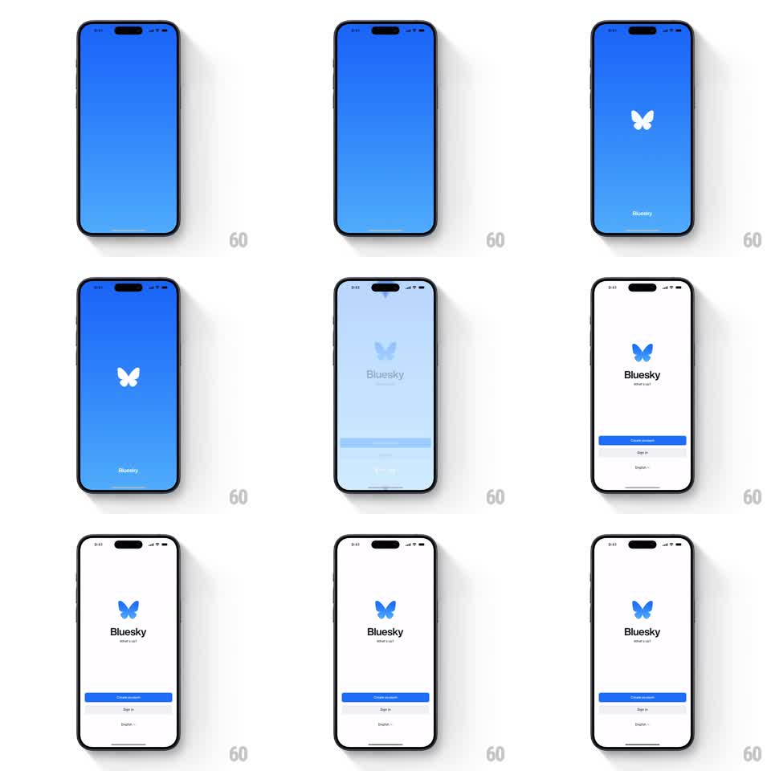

Media
Frame-by-frame

Rebuild this animation 1:1: Bluesky's splash-to-onboarding morph - the full-bleed blue splash collapses into the white onboarding screen as the butterfly logo shrinks and re-colors into place.

Rebuild this animation 1:1: Bluesky's splash-to-onboarding morph - the full-bleed blue splash collapses into the white onboarding screen as the butterfly logo shrinks and re-colors into place. ## Integration Integration: stack-agnostic spec - springs given as stiffness/damping, timed motions as duration + curve; map every value to your framework and animation library of choice. ## Scene Splash: full-bleed Bluesky blue with a small white butterfly centered and "Bluesky" tiny at the bottom. Onboarding: white screen with the blue butterfly, "Bluesky / What's up?" headline, and Create account / Sign in buttons with a language row. ## Motion spec Pattern: background color collapse with logo recolor, ~900ms. - The splash holds ~600ms with the white butterfly pulsing once (scale 1 to 1.08 and back, 500ms). - The blue background then wipes upward, collapsing like a rising blind (450ms, ease-in-out), revealing white from the bottom. - In the same motion the butterfly shrinks and moves up to its onboarding slot (450ms matched transform) while crossfading from white to brand blue at the midpoint. - The headline fades in under the logo (300ms, 8px rise), then the buttons slide up and fade in with a 80ms stagger (300ms, ease-out), the language row last. - No element jumps: the logo is one continuous object across the two screens. ## Calibration - The wipe and the logo travel are the same duration and curve - the logo rides the color boundary. - The white-to-blue recolor happens mid-flight; recoloring before the move reads as two logos. ## Reduced motion Splash crossfades to the onboarding screen. ## Don't miss - The splash's tiny bottom "Bluesky" fades out as the wipe starts - it must not survive into the onboarding layout. - The wipe direction is bottom-up; the onboarding content then feels revealed, not pushed.